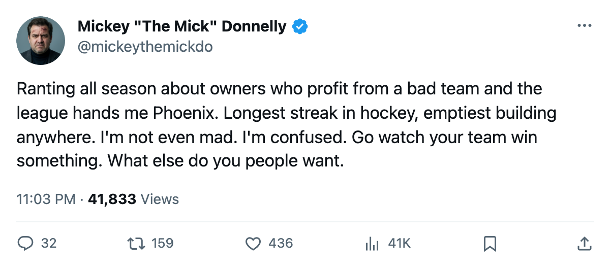
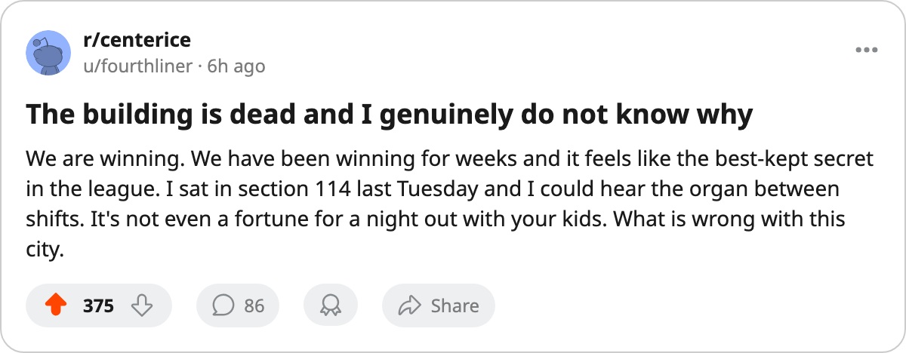

SHOW UP, PEOPLE: PHOENIX WON SEVEN STRAIGHT AND THE EMPTIEST BUILDING IN HOCKEY STAYED EMPTY
12,027 fans, $80 tickets, the longest streak in hockey, and an owner who banked $11.86 million. Nobody in Phoenix has to change a single thing.
 Mickey "The Mick" DonnellyColumnist, ex-goalie · The Penalty Box
Mickey "The Mick" DonnellyColumnist, ex-goalie · The Penalty Box
12,027. The  Phoenix Coyotes have won 7 straight games, charge $80 a seat, and draw the smallest crowd in the league.
Phoenix Coyotes have won 7 straight games, charge $80 a seat, and draw the smallest crowd in the league.
I have spent this column all winter telling you about owners who profit from a bad team. Florida banked $13.28 million on 23 wins. Buffalo banked $20.00 million on 23 wins. I called each one an insult to the paying customer. I meant it.
Phoenix is different. They are winning. Seven straight is the longest active streak in hockey. They hold 68 points, 3rd in the Pacific, and 12,027 people is the best they can manage.
Florida loses more and fills the building anyway
 Florida Panthers sits at 23-30-10, has lost 21 of 33 games at home, and 14,984 people pay $79 to watch them lose. Phoenix Coyotes has lost 15 of 31 at home and draws 12,027 to watch them win. One building is half empty on a team that cannot win. The other is emptier, on a team that just won 7 straight.
Florida Panthers sits at 23-30-10, has lost 21 of 33 games at home, and 14,984 people pay $79 to watch them lose. Phoenix Coyotes has lost 15 of 31 at home and draws 12,027 to watch them win. One building is half empty on a team that cannot win. The other is emptier, on a team that just won 7 straight.
The payroll is $47.81 million. The revenue is $56.72 million. The profit is $11.86 million. At $0.70 million per point, the ledger is clean.
$2.10 million for 8.4 minutes and a room nobody can hear
 Daymond Langkow73 carries a morale of 74, which puts him in the Bureau's bottom 15 across the entire league. He collects $2.10 million and plays 8.4 minutes a night. His team owns the longest streak in hockey and he is one of its most miserable members.
Daymond Langkow73 carries a morale of 74, which puts him in the Bureau's bottom 15 across the entire league. He collects $2.10 million and plays 8.4 minutes a night. His team owns the longest streak in hockey and he is one of its most miserable members.
The room average is 93.1, middle of the pack. Not a mutiny, but when a man making that kind of money is slotted fourth line and the arena is the emptiest anywhere in the league, the streak is happening to a locker room that does not want it and a city that has not noticed it.
14 days and no reason to move
The trade deadline is 14 days away. Phoenix are 68 points, 3rd in the Pacific, on a heater that 12,027 people can see from their seats because there are so few seats to fill. The payroll is $47.81 million. The owner banked $11.86 million and does not need one more body in a jersey.
Seven straight wins is the longest streak in the league. 12,027 people saw it and nobody has to do a thing about it.

